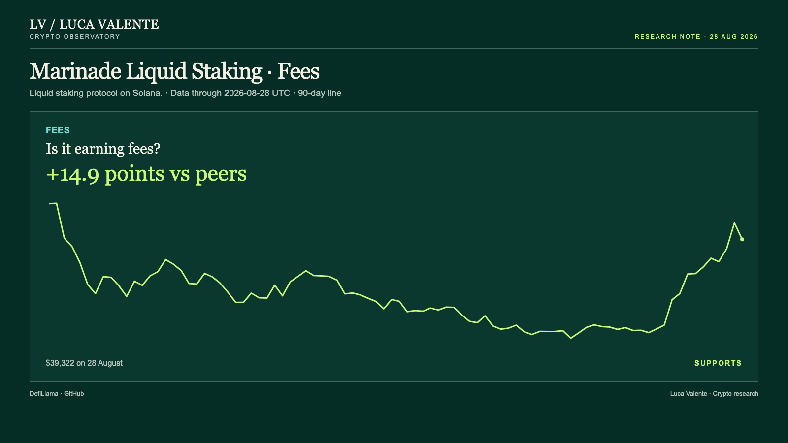
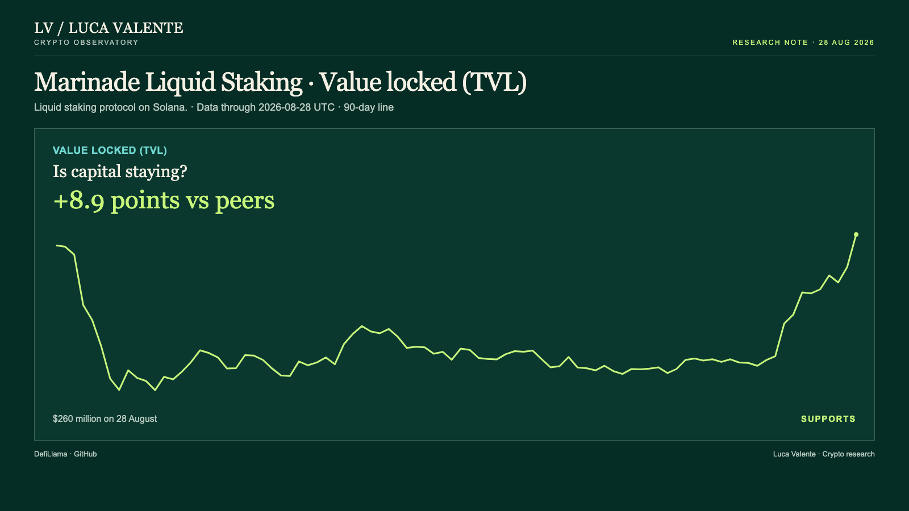

Training note, written on 23 September 2026 from data as of 28 August 2026. Not part of the published series.
Deposits Set A High. Solana's Stablecoins Matched Peers.

Marinade Liquid Staking ended 28 August with deposits at a 90-day high and its chain's stablecoin balance up over the month by the group median. It lets people stake SOL, Solana's own token, and hold a tradeable receipt instead of locking the coins up outright. For a reader deciding whether Marinade is gaining staking money, the first number is about Marinade and the second is about the whole of Solana. The token traded under MNDE covers all of Marinade, so I am not comparing its price with any of this.
Across the top of the cover, the header says it plainly: usage up, MNDE price not compared. Underneath it the four measures are charted against what comparable peers did over the same 30 days. Marinade sits in a liquid-staking group of 33 protocols, and I compare each measure only with the entities in that group that report it. That is why the number of entities behind each comparison is not the same from one measure to the next.
A skeptic's best point is the stablecoin line. Solana's own stablecoin balance, the chain Marinade runs on, stood at $16.25 billion on 28 August, up 0.8% over the last 30 days. The median move among the 30 entities in the group that report a stablecoin figure, out of that same 33, was also 0.8%. Net of that comparison the gap is exactly zero, and the balance has fallen on three of the four days since 25 August. It is also the only line here that is not Marinade's own, which is why I weigh it less than the three that are.
Everything else points the other way. Fees came to $39,322 on the day, down 5.0% from $41,403 the day before, but up 40.0% over the full 30-day window. The median among the 27 entities in the group that report fees, out of the 33, rose 25.1% over the same stretch, which leaves Marinade 14.9 points ahead of that middle figure. At $39,322 the day's figure sits inside the 90-day range, between $26,812 on 6 August and $43,893 on 1 June.

Code activity shows the same pattern. In the most recently completed week, 16 to 22 August, Marinade's public code repositories logged 25 commits, and the 30-day change for that line is up 69.8%. The peer median is flat, 0.0%, among the 13 protocols that report commits at all, so the entire 69.8-point gap belongs to Marinade alone. Value locked, the money actually sitting in its contracts, jumped 8.4% in a single day, from $240 million to $260 million. Over 30 days it is up 46.6%, 8.9 points ahead of the 37.7% median among the 28 group members that report it, and also a 90-day high, with the low at $164 million on 11 June.

Put in order, commits turned first, in the week of 12 July, six weeks before this reading, rising in four of the six weeks since. Fees turned on 15 August, 13 days out, up on 11 of the 14 days that followed. Value locked turned on 18 August, ten days out, up on nine of the next eleven. None of this comes with a reason attached: nothing here says why fees dipped on the last day or why deposits jumped on it either.
What I didn't look at matters too. There's no DEX volume figure for Marinade here, and no L2 transaction count either. There's no user count or wallet count in any of this: the four numbers behind this reading are fees, commits, the stablecoin balance and value locked, and nothing about how many people sit behind them. The reading stops on 28 August; what came after isn't part of it.
I could be wrong about how much that stablecoin gap should worry me. A $16.25 billion balance moving in step with a 30-entity median is thin ground to lean on either way. If by 27 September most of the four usage measures are slowing against their peers, this reading was wrong. I read the deposits and the code as the stronger story here, with the stablecoin line the one still standing apart from it.
Sources: DefiLlama, GitHub.
Not financial advice. This is a research note based on public on-chain data.